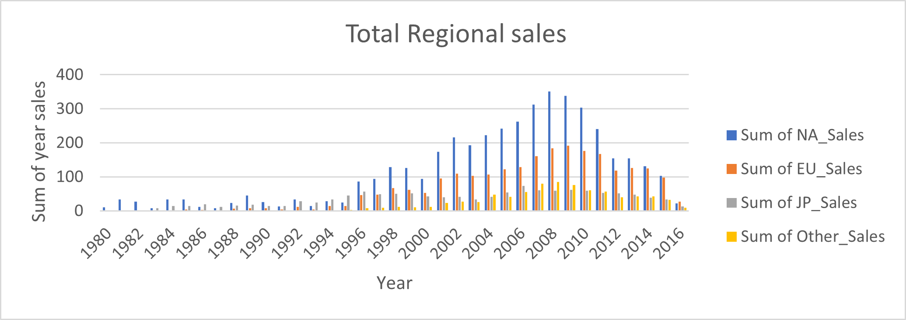
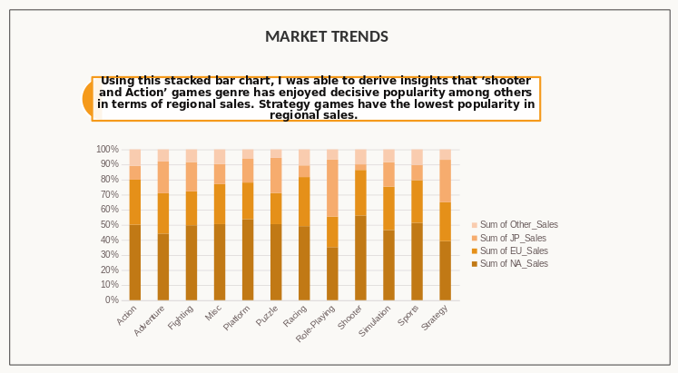
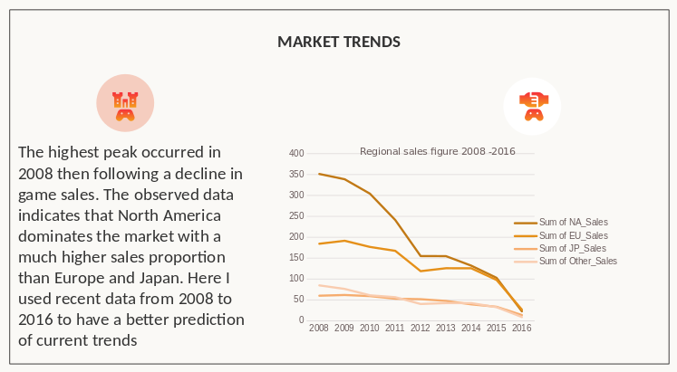
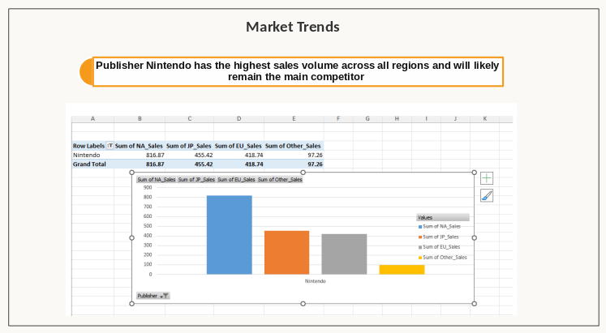
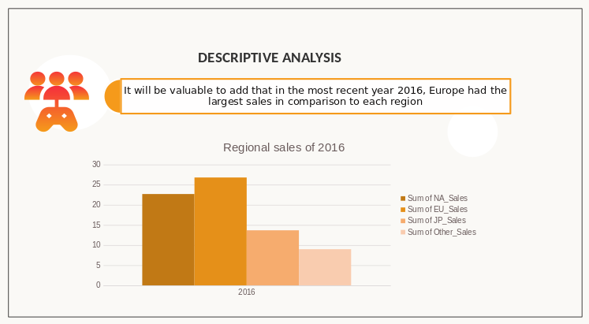

The Video game popularity Data project analyses historical video game sales
to provide GameCo with insights for strategic decision-making
Project Objectives
Identify Popular games Genres
Assess Competitive Landscape
Track Popularity Trends
Regional Sales Analysis
Problem Statement
GameCo’s Executives assumed that sales for the various geographic regions have
stayed the same over time. GameCo Needs to understand which types of video games
are most popular, identify main competitors, and analyze sales trends across
different regions to make informed decisions on game development and marketing
strategies.
Scope: Sales figures for games with over 10,000 copies sold
Units: Sales represented in millions
Methodology
I used data cleaning techniques to clean a ‘dirty’ version of the video game
sales data. There are several blanks in the columns. I removed the rows
containing data without Vital information like Name, Year, Publisher,
and platform. Rows containing only value data do not meet the criteria for
substantial analysis. I removed duplicates and handled missing values by
correcting inaccuracies.
Skills and Tools
Microsoft Excel
Sorting and filtering
Creating Pivot tables
Grouping Data
Summarizing Data
Descriptive Data Analysis
Created Visualizations
Insights development
Presentation of Findings
Summary Statistics
To analyze whether sales for the geographic regions (North America, Europe, Japan,
and other regions) have stayed the same over time from 1980 to 2016, a time series
analysis on the sales data (as-it-is) should first be performed. This time series
analysis should act as a first-stage statistical method to use to examine patterns
and trends in data over time.

Charts




Insight and Findings
Popular Game Genres: Shooter and Action games are the most popular genres across all regions.
Sports and Platform games also show significant popularity, especially in North America and Europe.
Role-playing games are particularly popular in Japan.
Regional Sales Trends: North America consistently dominates the market with the highest sales
proportions. From 2008 to 2016, NA sales peaked in 2008 at 351.40 million units but showed a
declining trend, reaching 22.66 million units in 2016. Europe showed steady sales, with a peak
in 2008 at 184.40 million units and a gradual decline to 26.75 million units in 2016.
Japan had lower sales compared to NA and Europe, with a peak of 61.71 million units in 2009
and a decline to 13.65 million units in 2016. Other regions showed the least sales, peaking
at 84.74 million units in 2008 and decreasing to 8.96 million units in 2016.
Japan had lower sales compared to NA and Europe, with a peak of 61.71 million units in 2009
and a decline to 13.65 million units in 2016. Other regions showed the least sales, peaking
at 84.74 million units in 2008 and decreasing to 8.96 million units in 2016.
Competitive Landscape: Nintendo is the leading publisher across all regions, with the highest
sales volumes. Other significant competitors include Electronic Arts (EA) and Activision
Blizzard, particularly strong in North America and Europe.
Market Dynamics: Sales data from 2008 to 2016 indicates shifting trends, with North America
and Europe showing declining sales, possibly due to market saturation or shifting consumer
preferences. Japan’s market shows a preference for role-playing games, which can be a niche
focus for GameCo.
Read more...
Recommendations
Focus on Popular Genres:
Prioritize developing and marketing Shooter and Action games to capture a
significant share of the popular genres. Consider creating Sports and Platform
games to appeal to a broad audience in North America and Europe.
Regional Marketing Strategies:
In North America, focus on maintaining dominance in Shooter and Action genres.
Invest in innovative marketing strategies to counteract the declining trend.
In Europe, tailor marketing campaigns to highlight popular genres like Shooter,
Action, and Sports games.In Japan, develop and market Role-Playing games to
cater to local preferences. Collaborate with local influencers to boost market presence.
Competitive Positioning:
Analyze strategies of top competitors like Nintendo, EA, and Activision Blizzard.